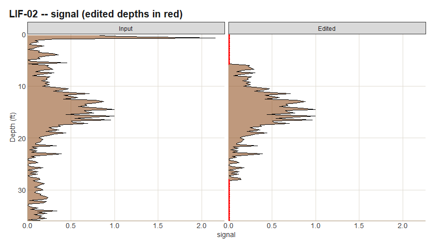
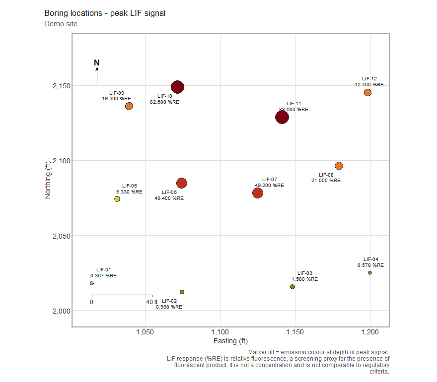
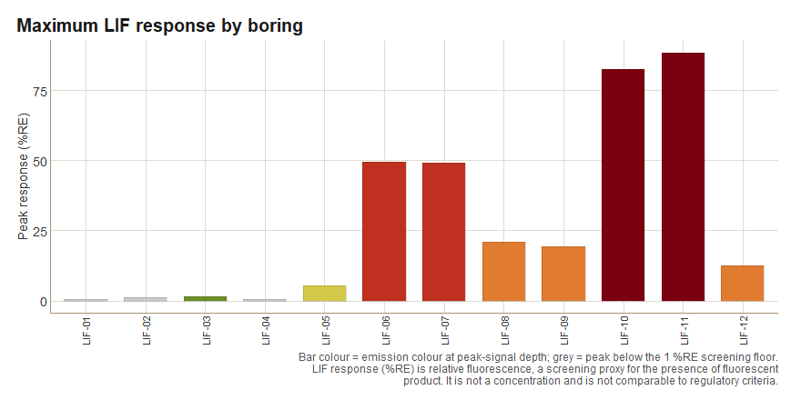

lifr reads Laser-Induced Fluorescence (LIF) borehole logs from high-resolution site characterization surveys (UVOST, TarGOST, and similar direct-push fluorescence probes), lets you clean them with a recorded audit trail, and turns them into plots and a site report.
| Stage | What lifr does |
|---|---|
| Import | Reads every .lif.dat.txt in a folder into one tidy data frame, keeping every channel the instrument recorded, and joins boring coordinates from a locations file. |
| Edit | Masks known-bad depth intervals. Every edit is logged in an audit trail that travels with the data and prints in the report. |
| Summarise & plot | QA statistics, depth profiles, multi-channel overviews, plan-view boring maps (optionally over USGS aerial imagery), depth-slice maps, and site summary charts. |
| Report | A self-contained HTML site report with Summary, Data & QA, Processing history, and Boring logs tabs, plus Markdown and PDF. |
Full documentation, with every function and worked articles, is at https://mjorden.github.io/lifr/.
Installation
# install.packages("remotes")
remotes::install_github("mjorden/lifr")lifr needs R 4.1 or newer. Optional extras: ggrepel for non-overlapping map labels, sf and png for aerial-imagery basemaps, and rmarkdown plus a LaTeX distribution (for example tinytex::install_tinytex()) for the PDF report.
Five-minute tour
The package ships with a synthetic 12-boring site so everything below runs on a fresh install.
library(lifr)
demo <- system.file("extdata", "demo", package = "lifr")
lif <- lif_import(demo, verbose = FALSE)
lif
#> <lif_data> 12 boring(s), 1489 sample(s), depth 0.2-37.5 ft, 0 edit(s)
#> channels: signal, ec, hp, color
#> easting northing depth signal boring msl ec hp color
#> 1 1014.5 2017.9 0.25 2.506 LIF-01 149.6 8.87 2.79 #6B8E23
#> 2 1014.5 2017.9 0.50 0.206 LIF-01 149.6 9.31 2.41 #B0B0B0
#> 3 1014.5 2017.9 0.75 2.146 LIF-01 149.6 9.75 2.59 #6B8E23
#> 4 1014.5 2017.9 1.00 0.095 LIF-01 149.6 9.40 2.83 #B0B0B0
#> 5 1014.5 2017.9 1.25 0.208 LIF-01 149.6 10.38 2.97 #B0B0B0
#> 6 1014.5 2017.9 1.50 0.098 LIF-01 149.6 9.38 2.68 #B0B0B0
#> 7 1014.5 2017.9 1.75 0.213 LIF-01 149.6 10.07 2.72 #B0B0B0
#> 8 1014.5 2017.9 2.00 0.148 LIF-01 149.6 9.48 3.08 #B0B0B0
#> 9 1014.5 2017.9 2.25 0.050 LIF-01 149.6 10.04 2.86 #B0B0B0
#> 10 1014.5 2017.9 2.50 0.003 LIF-01 149.6 9.46 3.01 #B0B0B0
#> # ... 1479 more row(s)One row per depth reading. The known channels are canonicalised to signal (%RE), ec (mS/m), hp (psi), and color (emission-wavelength hex); any other column in the source files is carried through untouched.
Clean up with an audit trail
Surface smear in the top foot and a rod-change artifact in one boring are typical things to mask before summarising. Each call appends a row to the edit history.
lif <- lif_zero_shallow(lif, depth = 1)
lif <- lif_editor(lif, "LIF-03", top = 20, bottom = 22)
lif <- lif_keep(lif, "LIF-02", top = 6, bottom = 28) # keep one clean window
tail(edit_history(lif), 3)
#> timestamp fn boring top bottom value n_rows_changed
#> 12 2026-09-04 14:40:07 -0600 lif_editor LIF-12 0 1 0 4
#> 13 2026-09-04 14:40:07 -0600 lif_editor LIF-03 20 22 0 9
#> 14 2026-09-04 14:40:07 -0600 lif_keep LIF-02 6 28 0 55
#> notes
#> 12 <NA>
#> 13 <NA>
#> 14 kept 6-28 ft; zeroed rows outside these windowsqc_compare() shows exactly what changed, with the edited depths in red:
plots <- qc_compare(lif_import(demo, verbose = FALSE), lif)
plots[["LIF-02"]]
Summarise
qa <- summarize_lif(lif)
qa$overview
#> n_borings n_samples min mean geom_mean geom_mean_n_excluded median max
#> 1 12 1489 0 4.75113 0.529891 108 0.242 88.607
#> pct_detect
#> 1 92.74681
head(qa$by_boring)
#> boring n peak peak_depth mean geom_mean geom_mean_n_excluded p50
#> 1 LIF-11 116 88.607 16.75 17.357026 2.2040584 4 1.8250
#> 2 LIF-10 110 82.625 16.75 11.922682 2.1773476 4 2.2865
#> 3 LIF-06 150 49.434 18.25 7.949300 0.9372923 4 0.3355
#> 4 LIF-07 116 49.217 16.00 10.066043 1.6600752 4 1.7645
#> 5 LIF-08 109 21.045 17.00 4.133661 0.8925489 4 0.5590
#> 6 LIF-09 125 19.417 15.25 3.628224 0.7943718 4 0.4600
#> p95
#> 1 74.57925
#> 2 45.34470
#> 3 34.20915
#> 4 39.87375
#> 5 17.72540
#> 6 14.93840Map the site
boring_map(lif, use_instrument_color = TRUE, site_name = "Demo site")
chart_max_response(lif)
Render the report
site <- process_site(demo, output_dir = "out", site_name = "Demo site",
corrections = list(zero_shallow = 1))
site$reports$htmlThe HTML report is one self-contained file: stat tiles, the boring maps, peak-response tables, QA statistics, the complete edit log, and a one-boring-per-section log browser showing input beside edited data with the zeroed windows shaded.
Learn more
-
vignette("intro"): getting started, end to end. -
vignette("data-format"): the raw file formats and what import does with them. -
vignette("editing"): masking artifacts, edit plans, and the audit trail. -
vignette("plotting"): a gallery of every plot with its options. -
vignette("reporting"):process_site(), the report tabs, and output files.
About %RE
LIF response is relative fluorescence, expressed as a percentage of a reference emitter (%RE). It indicates where fluorescent product is likely present. It is not a concentration and is not comparable to regulatory criteria; lifr never maps it onto such criteria.
Synthetic data
The bundled demo site and every figure in the documentation come from lif_simulate(). They have no relation to any real site. Use lif_simulate() to try the package before you have field data.